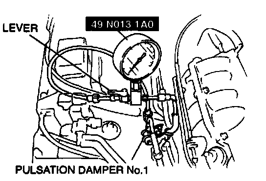
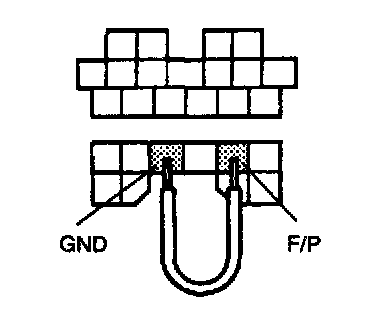

Fuel Line Pressure Inspection
WARNING- Fuel line spills and leaks are dangerous. Fuel can ignite and cause serious injuries or death and damage. Always carry out the following procedure with the engine stopped.
1. Complete the "BEFORE REPAIR PROCEDURE".
2. Disconnect the negative battery cable.

3. Disconnect the fuel pipe on the pulsation damper No.1 outlet side. Set the SST between pulsation damper No.1 and the fuel distributor as shown in the figure. Turn the lever on the SST as shown to open the fuel line.
NOTE:
- Verify that a click is heard when the SST is pushed into pulsation damper No.1 and fuel pipe.
4. Pull the quick release connector by hand and verify that it is installed securely.
5. Connect the negative battery cable.
CAUTION:
- Connecting the wrong data link connector terminals may possibly cause a malfunction. Carefully connect the specified terminals only.

6. Connect data link connector terminals F/P and GND by using a jumper wire.
7. Turn the ignition switch to ON to operate the fuel pump. Measure the fuel line pressure.
Fuel line pressure 370-420 kPa (3.7-4.3 kg/Sq.cm, 53-61 psi)
8. Turn the ignition switch off and disconnect the jumper wire.
9. If not as specified, inspect following:
- Fuel pump maximum pressure
- Fuel pump relay
- Fuel filter for clogging
- Fuel line for clogging or leakage
If all items above are okay, perform the "Fuel Hold Pressure Inspection".
10. Disconnect the SST and connect the fuel pipe to the pulsation damper No.1.
11. Complete the "AFTER REPAIR PROCEDURE".